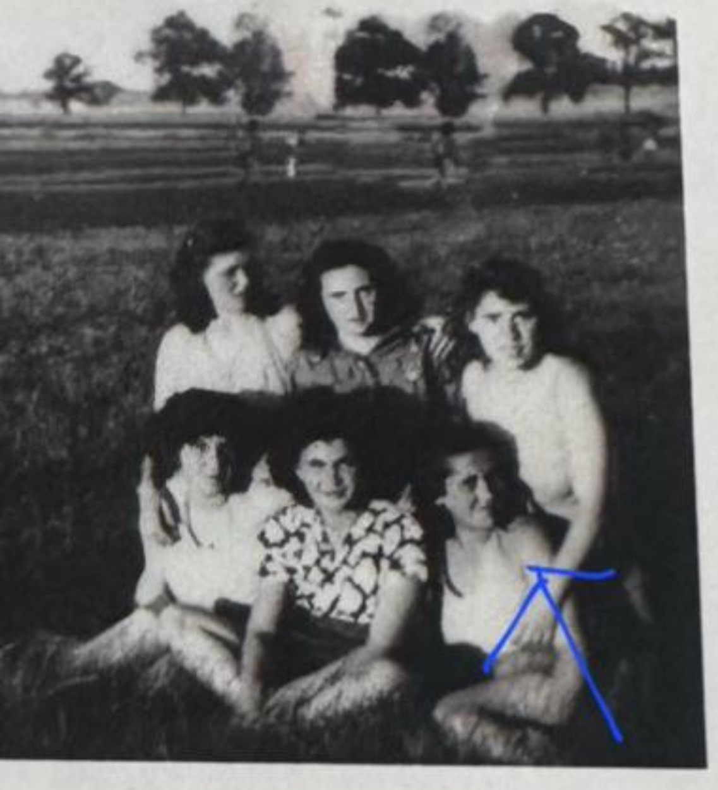
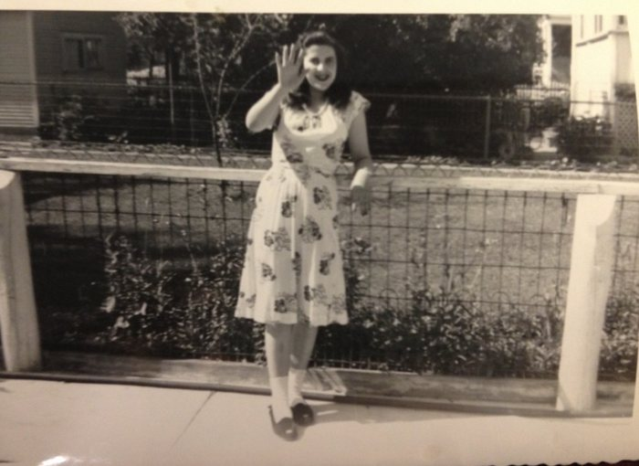
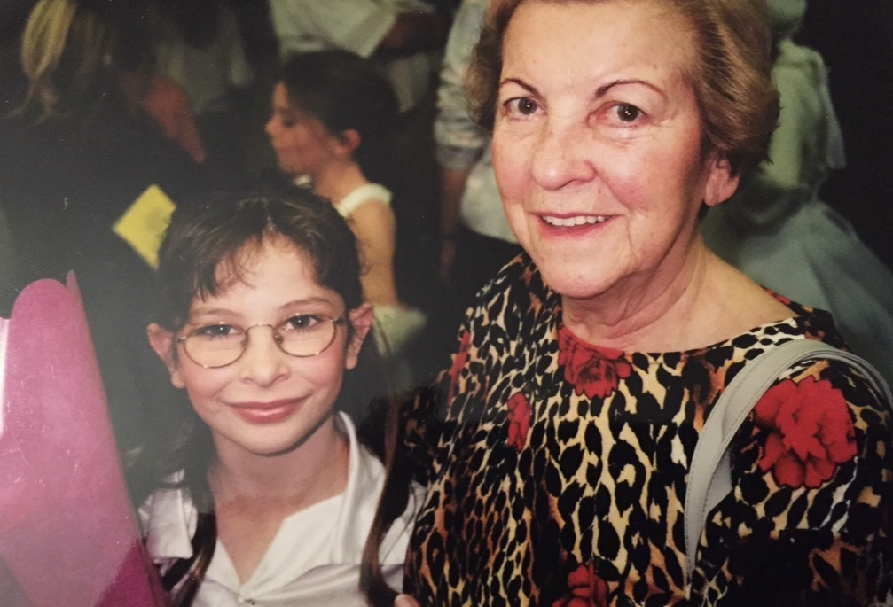
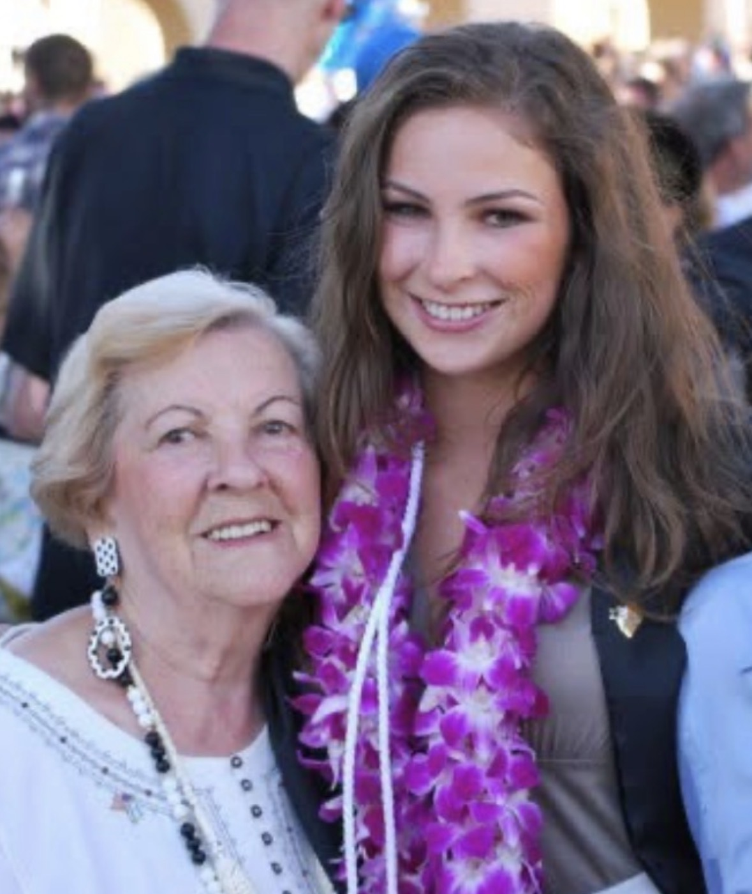

The Researcher
Samantha Seligman-Grajewski
Third generation. Granddaughter of Helen Lando Helman of Tiszabogdány. Founder of Engineering Remembrance.
I work in process engineering and I am finishing an M.S. in Chemical Engineering at Stanford. I had no training in Holocaust research or genealogy when I started, and I still have none. What I had was a way of thinking about systems, and a grandmother whose family had been reduced to a village name and a handful of first names.
Helen was the sole survivor of her immediate family. Her mother, her father and her five brothers and sisters were murdered in 1944. Another little sister, Cecilie, had died in 1940, aged two. For most of my life we had nothing of them. No photograph, no grave, no date. The family held one Buchenwald prisoner card for her father, which only reached us in 2019, when the Arolsen Archives put their holdings online, and assumed that was the end of what could be known.
Helen and my grandfather Tibi Katz helped raise me. Helen was a super grandma: she was happiest with her grandchildren, and she was the kindest, best person I have ever met. I chose UCLA for my undergraduate degree so I would never be far from them, and when Helen died, I moved in with Tibi and lived with him until he died. He was my favorite roommate. You would never have known what either of them had been through. Helen would tell anyone; that’s why she spoke at schools. Tibi didn’t talk about the war the way she did, but eventually he opened up to me.
I started looking properly in 2026.
I do this research from Hawai‘i, about as far from Europe as you can get. I speak only English. The records are in Hungarian, Czech, German, Russian, Yiddish, Hebrew and more, so I use AI to help me read and translate them, and then I check what it tells me against the page.
Engineers take a finished thing apart to see how it was made. I do the same with a family: I reverse-engineer what happened from the records the system left behind. That’s why this is called Engineering Remembrance. If I can learn it, you can too.
What she said about me
In 2008 Helen sat for a recorded interview. Near the end, the interviewer asks about her grandchildren.
I was sixteen. I had said once, at her kitchen table, that I wanted to go to Stanford, and then I never applied. I went to UCLA instead, to stay close to them. Eighteen years later I applied to Stanford for a master’s and was admitted, and that July I listened to this tape again and heard what she had done with a passing remark from a teenager.
InterviewerYes, well what’s the other? You said you had three grandchildren?
HelenYes… Samantha.
InterviewerRight.
HelenShe is sixteen, exactly sixteen. And she, she is in school, in high school. She hopes, she hopes to go, if she makes it, she’s pretty smart, to Stanford. She would like to go to Stanford University.
What I found
Among the records are the Buchenwald intake photographs of Helen’s father and his two nephews, wagon drivers like him, photographed one behind the other and numbered 322, 323 and 324.

Through records alone I reconstructed the nephews’ survival: both lived, and they are most likely the two cousins who found Helen in Budapest in 1945 and told her what had happened to her family. She described two cousins in her own recorded testimony and never named them. The records point to these two.
Following them forward reached living descendants in Israel and the United States, from a branch that left with a Zionist youth movement before the war. Their family tree was missing Zacharias and David, two of Iczik’s sons, and everyone who came after them. I was able to tell them that one of those brothers had a daughter who survived.
Helen, 1929 to 2013
She was my grandmother, and she helped raise me. These are some of the few photographs of her life after the war.






“We all have stories to tell. You know, all of us have some kind of story to tell.”
Helen Lando Helman, speaking at the Orange County High School of the Arts, about 2002Speaking
Philadelphia, World Federation of Jewish Holocaust Survivors and Descendants: Saturday 24 October, 10:40 am to 12:20 pm, workshop with Jude Richter (USHMM), “For Those Who Don’t Fully Know Their Parents’ Holocaust Histories”. Sunday 25 October, 3:30 to 5:15 pm, “Present and Connect”. Find me at my table both days.
Get in touch
If you are trying to find your own family and do not know where to start, or if you work with a collection this method might help, write to me. I read everything.
If you want the method rather than the story, it is on the method page, with every collection I used. Both are free and always will be.